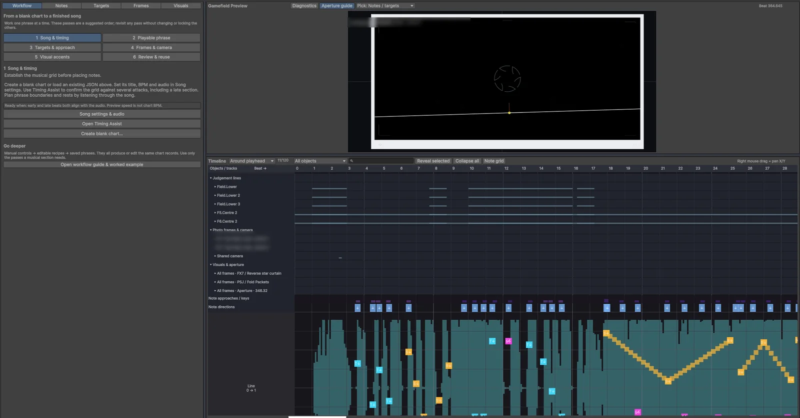

Memora
A mobile rhythm game that explores the concept of memories and recollection
- What it is
- An indie rhythm game that modernises the genre with new ideas and wraps it up into a beautiful story about memories and photography
- My role
- Independent developer responsible for programming, art, music direction and storyboarding
- Built with
- Unity 6, C#, URP
- Art produced in
- Clip Studio Paint, Adobe Illustrator
- Music
- REAPER
- When
- Late 2024 – current
Background
Memora is a rhythm game inspired by popular rhythm games in the mobile gaming space, such as Arcaea, Phigros, Project Sekai and Cytus, to name a few. Each of these games has its own way of presenting the concept of a rhythm game, and they have been pioneers in progressing the genre, especially on mobile, where your fingers become direct input points in the game. Memora takes some of the concepts established in these games and pushes them a step further: the judgement lines move, spin and disappear in time with the music, notes can float free of any line, fly towards another note or aim at a point on the screen that is still moving when you hit it, and almost everything on screen is choreographed to the song. The game also comes with a visual novel-style story that explores the feeling of growing up, going through hardships and trying to find your way, leaving behind memories that push you forward.
Keeping judgement apart from the visuals
In a traditional lane-based rhythm game, in the style of Dance Dance Revolution or Guitar Hero, a single number is enough to describe a note. It has a time, it scrolls down a fixed lane at a known speed, and the place where it is drawn and the place where it is judged coincide at the judgement line on that exact beat. Phigros changed this by attaching notes to judgement lines that move, rotate and fade during the song, so the correct place to hit a note became wherever its line happens to be on the note's beat, which in turn depends on how the line has been animated up to that point.
Memora adds two more complications on top of that, because notes can float in open space or aim at other objects, and I wanted their entrances to be expressive, with curves, spirals, snaps and overshoots timed to the music. The most direct way to build that is to give each note one transform, animate it, and judge the tap wherever the note ends up, and my early prototype worked exactly like that. It meant every visual idea was also a gameplay change. When an entrance animation overshot, the hit point overshot with it, and a small amount of camera shake was enough to move a target away from where the player expected it to be.
I split every playable note into two separate records. The judgement record holds only what decides the score, meaning the beat, the target and the action, which can be a tap, a hold, a slide or a flick. The presentation record describes how the note looks on its way in and out, written as keyframes measured in beats so that the movement locks to the music. Input, scoring, autoplay and miss detection read the judgement record and nothing else, and the camera, layers and effects are applied after the hit position has been resolved, so none of them can move a target. Where a note is judged, where its head is drawn and where its cue line starts are calculated separately, and all three are required to meet at the same point on the hit beat.
The split also made visual-only notes possible. They use the presentation record on its own, so they look exactly like real notes but are never judged, scored or played by autoplay, and I use them for fake-outs in the choreography. Storing two records per note costs more data and leaves two code paths that must stay consistent with each other. I accepted that cost deliberately, because any disputed judgement can now be traced back to one small record of beat, target and action.
Timing
Game engines normally measure time in frames. Each frame, Unity reports how long the previous one took, and the usual way to move something is to add its speed multiplied by that interval to its position. Audio runs on a different clock altogether, because sound is mixed on a separate audio thread and handed to the hardware one buffer at a time, and a song started with an ordinary play call begins whenever the next buffer happens to be mixed, so its exact start relative to the game is never known.
Over the length of a song those two clocks drift apart. Frame intervals vary, particularly on phones that slow down as they warm up, and moving objects a little on each frame turns every hitch and rounding error into a permanent offset. At 120 BPM a beat lasts 500 ms and Memora's Perfect window is 100 ms either side of it, so an error of a few tens of milliseconds is enough for a player to feel.
Memora therefore takes its time from Unity's audio DSP clock. The song is scheduled to start at a known point on that clock, a short pre-roll ahead, and the current song position is the DSP time since that point, minus the chart's own offset and the latency measured for the player's device. Pausing freezes the song position, and resuming schedules the audio again. Every line position, target and animation is calculated directly from the resulting beat on each frame, which means a dropped frame can't push anything off course. The same rule later let the editor jump to any point in a song, because nothing on screen depends on what happened in earlier frames. It does rule out simulation-style effects that build up state over time, and I treat that as a fixed constraint of the engine.
Scores are out of 1,000,000. Accuracy is worth 900,000 of that, with a Great counting for 70% of a Perfect, and the remaining 100,000 comes from combo, so a run made up entirely of Perfects always totals exactly 1,000,000.
Try it yourself
This is a stripped-down version of how Memora judges a tap. Once you press Start, a ring will close in on the circle at 100 beats per minute, and you tap the circle (or press Space) at the moment the ring meets it. Each tap is graded with the same windows the game uses by default, so anything within 100 ms of the beat counts as a Perfect, anything within 250 ms is a Great, and the rest are misses.
This demo needs JavaScript.
Not started
Your last eight taps will appear on the scale below.
Like the game, the demo keeps time using the audio clock instead of counting frames. If your taps keep landing late even when they feel right, that's probably your browser or headphones adding a little delay of their own, and measuring that delay is what the calibration screen in Memora is for.
The DSP clock records when audio is handed to the device, which is some time before the player hears it. Android phones differ widely in how much output delay they add, and Bluetooth headphones often add well over 100 ms on top of that, which is enough by itself to turn every Perfect into a Great. The game has no way of measuring that delay on its own, so it has to ask the player.
The calibration screen plays a looping four-beat bar and asks for four taps on the accent. Each tap is matched to its nearest accent on the DSP clock, taps far outside the window are ignored, and a second finger landing on the same accent doesn't count twice. With four offsets collected, the game sorts them and takes the mean of the middle two, so a single stray tap can't drag the result. It then checks how closely the taps agree using the median absolute deviation, and if they fall into two separate clusters it asks the player to try again instead of saving a number it can't trust.
Notes that aim at moving things
In a lane-based chart every note is independent, so the game only ever needs to know each note's own time. Once one note can aim at another, the chart becomes a set of dependencies, and a question comes up that lane games never have to answer, which is the moment at which the target's position should be read.
Say note B flies towards note A. B has to arrive where A is at the moment B is hit, which isn't necessarily where A was when A itself was hit, because A may belong to a line that has moved since. The target therefore has to be sampled at B's hit beat. Reading A's live object in the scene would work while the song plays forward, but it breaks once A has been hit and removed, and it gives a different answer when the editor jumps backwards, because the live object's state depends on the frames that came before.
I made every target provider a pure function of the chart, the beat and the size of the playfield. Nothing a note aims at is allowed to depend on the previous frame or on anything remembered during play, so the position of any target at any beat can be worked out from scratch. The editor relies on this to jump backwards and draw exactly what it would have drawn if you had played up to that point, and automated checks seek backwards through charts and compare the two results.
Notes approach their targets in one of two ways. The default, predictive approach heads for where the target will be on the hit beat, which reads clearly when a line is about to move. The adaptive approach follows the target's current position instead, and that needs extra care when a line teleports, meaning it jumps to a new position in zero time. Without a correction the note would jump along with the line, so the game compiles a schedule of teleports from the chart and derives the correction from that schedule every time, which keeps the result independent of the previous frame and of the order in which the editor seeks.
The charting editor
A Memora chart is a JSON file. The excerpt below is cut down from the format the game reads, with the field names simplified, and shows one judgement line that rotates, one note on that line and a second note aimed at the first.
{
"bpm": 128,
"lines": [
{ "id": "L2", "lifetime": { "start": 16, "duration": 32 } }
],
"lineEvents": [
{ "lineId": "L2", "channel": "rotation", "beat": 24, "duration": 4,
"from": 0, "to": -12, "easing": "outCubic" }
],
"notes": [
{
"id": "n-01",
"judgement": {
"beat": 32, "action": "tap",
"target": { "kind": "line", "lineId": "L2", "along": 0.62 }
},
"presentation": {
"approach": "predictive",
"keys": [
{ "beat": -2.0, "progress": 0.0, "lateral": -0.35, "opacity": 0.0 },
{ "beat": -0.5, "progress": 0.85, "lateral": 0.1, "opacity": 1.0 },
{ "beat": 0.0, "progress": 1.0, "lateral": 0.0, "opacity": 1.0 }
]
}
},
{
"id": "n-02",
"judgement": {
"beat": 33, "action": "tap",
"target": { "kind": "note", "noteId": "n-01" }
},
"presentation": { "approach": "adaptive" }
}
]
}
Lines are objects with a lifetime, and their movement is stored as events on separate channels for position, rotation and appearance, each with a start beat, a duration and an easing curve. Every note keeps its judgement and presentation records apart. The first note is judged 62% of the way along line L2 on beat 32, and its presentation keys describe its path in beats relative to that hit, so it fades in two beats early, swings in from the side and settles onto the line. The second note is judged on beat 33 at wherever the first note is at that moment, and follows it adaptively. A full chart holds many more of these records, together with scroll-speed changes, moving target points, camera frames and decorative effects.
Writing that by hand isn't realistic, so I built an editor window inside Unity for authoring charts. The timeline shows each line, target point, camera frame and effect as a group of tracks for its lifetime, motion, appearance and layers, with the notes in a lane beneath them. Above the timeline, a preview draws the gamefield exactly as the player will see it at the current beat, and clicking in the preview selects the line or note underneath. Decorative effects such as rings, scanner sweeps and tunnels are driven by the same beat-based tracks, and a layers system combines their position, rotation, scale, alpha and tint in a fixed order that never touches the judgement records.

For a while the preview had its own simplified copy of the gameplay maths, and the two gradually drifted apart until effects, projection and audio-reactive visuals looked different in the editor from how they looked in the game. I moved that maths into shared evaluators, which are functions that take the chart and a beat and return the state of the gamefield, so that the game and the editor call exactly the same code, and I added parity checks that compare their output. Once they shared the code, the whole class of bugs where something looked different in the editor disappeared.
Jumping straight to any beat needed several supporting structures. The editor keeps an interval tree over every object's lifetime, so it can find everything active at a given beat without scanning the whole chart. Repeated events are stored once and expanded only for the stretch of the song being viewed, and a cached running total converts changes in scroll speed into distance travelled. When you scrub quickly, each new seek request replaces any older one that hasn't finished, and the preview only draws a result once it is complete.
Tracking down a slowdown in the editor
Charting depends on the preview running smoothly, because the way to check a passage is to play it back against the music and watch whether each note lands on the beat. As my charts grew, playback in the editor started to stutter, and on the densest section of the largest chart the preview updated about five times a second. At that rate each frame stays on screen for 200 ms, which is as wide as the entire Perfect window, so timing mistakes in the chart became impossible to see.
The editor is built with Unity's IMGUI system, which redraws the whole window from code. Unity calls that drawing code more than once per frame, at least once to lay the window out and again to paint it, so any work done there is repeated on every pass. Unity recommends its newer UI Toolkit for new editor tools, and rewriting the editor in it was the tempting fix, so I profiled the editor first to find out where the time was going.
The profiler pointed at one of the inspector panels. To be ready for an undo, it serialised the entire chart four times on every layout pass and four more times on every repaint, even when nothing was being edited, which on a large chart meant serialising the whole song eight times per frame. Repeated calculations of camera projection, line classification and timeline grouping added to the cost.
I changed the panel so that it takes a full undo snapshot only when something is edited, cached poses, camera samples and the playfield projection within each drawing pass, rebuilt the timeline lanes only after an edit, a load or an undo, and stopped submitting timeline rows that were off the screen. Since the cost came from serialisation and invalidation, the editor stayed on IMGUI. The table shows averages measured at normal playback speed in an 1800 × 980 editor window, with two seconds of warm-up and eight seconds of measurement on the same sections of three charts, before and after the change.
| Chart (start beat) | Preview updates/s before | after | Average repaint before | after |
|---|---|---|---|---|
| Chart A (56) | 14.8 | 59.6 | 47.3 ms | 11.5 ms |
| Chart B (60) | 9.6 | 56.1 | 74.6 ms | 15.6 ms |
| Chart C (142) | 4.6 | 55.0 | 119.8 ms | 14.9 ms |
| Chart C (296) | 5.0 | 66.5 | 121.4 ms | 12.9 ms |
Because the change affected how the editor draws, I needed proof that it still showed exactly the same thing. I ran 18,125 automated comparisons between cached and freshly calculated results across seeks, three screen aspect ratios, camera edits, undo and redo, compared six screenshots taken at identical beats before and after the change, which came out pixel-identical, and checked the SHA-256 hash of every chart file to confirm that none of them had been modified. The gameplay evaluators and the chart data were left untouched throughout.
Reusable patterns
Charts reuse ideas constantly, such as a stream of notes along a curve or two lines passing a melody back and forth, and rebuilding the same passage by hand for every song is slow and easy to get wrong. A library of reusable passages solves that, but it raises the question of what should happen to finished songs when a library entry changes later.
If a chart only holds a live reference to a preset, any fix or tweak to that preset silently changes every song that uses it, including songs that are finished and already tuned. I chose to compile presets into copies instead. Applying a preset turns it into ordinary chart records with fresh IDs, connects its external references through named ports to the lines I pick, and records which version of the preset the copy came from, all as a single undo step. Preset parameters are typed and whitelisted, so a preset can't run code. Re-applying a newer version is an explicit action, and the editor refuses it if the copy has been edited by hand, so a library fix only reaches a song when I decide to apply it.
If you'd like to keep reading, the next project is DesktopIdle: a small tray app that tidies your Windows desktop away when you leave the computer, and puts everything back when you return.